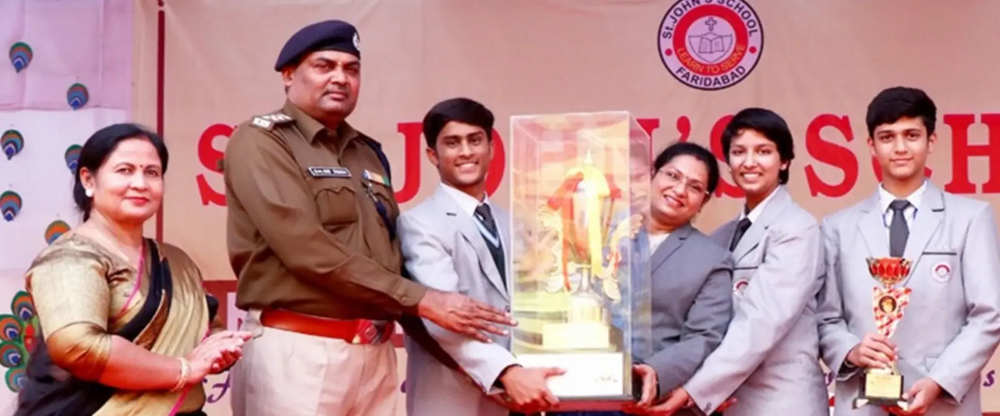

Toppers and achievements
Our CBSE board results for Classes X and XII, the students who led them, and where our former students have gone since.

Board toppers
Classes X and XII, newest year first.
Medals and prizes
Taekwondo and kickboxing, table tennis and athletics, declamation, dance and art: what our students won outside the exam hall, as recorded by the school.
Beyond the classroom
Years after leaving St. John's, our former students sit some of the toughest exams in India: the civil services, chartered accountancy, JEE and CLAT. These are the ranks they earned.
Your child could be on this page next.
Admissions for 2027–28 are open for Nursery and Class XI.